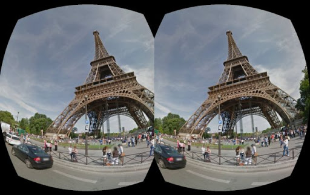
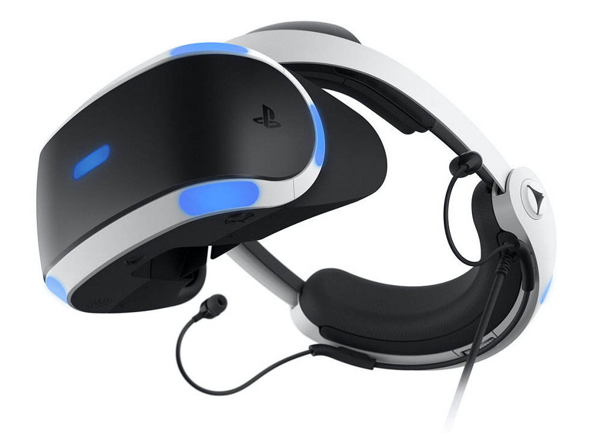
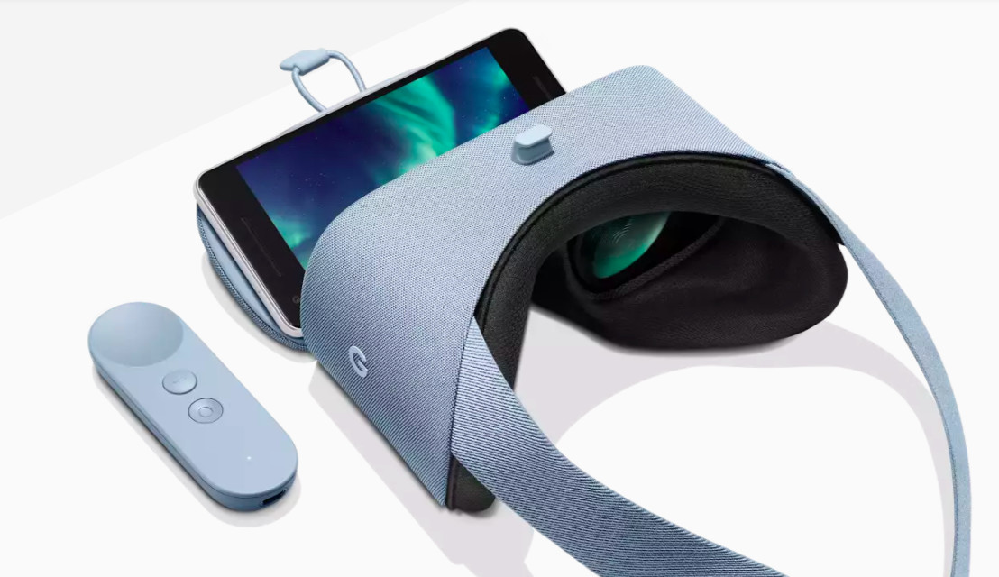

Virtual reality is a computer generated simulation of a three dimensional environment that can be interacted with in a seemingly real way that requires the use of specialized headsets. The user is completely immersed in a ultimate virtual world or reality. The VR headset helps create that simulated experience with the impression that they are experiencing a similar to the real world and "immerse" the viewer using computers and sensory devices like headsets and gloves.
Virtual Reality
Specification Virtual Reality
- Virtual Reality is:
- 75% virtual + 25% real
- Stereoscopic Head-Mounted Display 
- A binocular Head Mounted Device(HMD) has the potential to display a different image to each eye. This can be used to show stereoscopic images. This is the distance between the two eyes, measured at the pupils. It can project images and allows a user to see through it.
What VR does?
VR works by using goggle speakers and sometimes handheld wearables to simulate a "real world" experience in a virtual environment.
How is VR doing in terms of the future
Inventors continue to look for ways to make VR content more suitable for a lot of practical applications and make it more mainstream.
Applications / Headsets Used for Virtual Reality
What Industries are Using VR?
Virtual reality can be beneficial for work and social life.
- Real-World Applications:
- Education and Training
- Real Estate
- Automotive
- Movie
- Health Care
- Exposure Therapy
- Cognitive Behavioral Therapy
- Journalists
- Retail and Urban Design
Virtual Reality Game Applications
Applications where are you can virtually tour distant locations as if you were there as well as replacing everything around you with something else. Virtually traveling to other places in the world. Looking up at the night sky and gaze into the vastness of the universe. Also going on a virtual roller coaster ride.
2 Main Types of Augumented Reality
Devices and Headsets
- PC-Connected Headsets (Tethered Teadsets)
- HTC Vive
- Samsung Odyssey
- PlayStation VR
- Oculus Quest
- Oculus Rift
Tethered VR headsets use 6 Degrees Of Freedom(6DOF) field of view, with motion tracking that are using external sensors; on some devices or cameras and also outward facing cameras, for other devices. VR devices detects the direction in which you are facing and also the movements you make in those directions. These movement combined with 6DOF Motion controllers lets you move around in a virtual space with virtual hands.
PC-Connected headsets are the most engaging VR experienced devices. It is connected to a computer or a game console such as the Play Station, that generates a high-quality experience for the users. The processing power of modern computers is huge, which can generate a more realistic and persuasive digital world.

- Standalone Headsets (Mobile-Based Headsets)
- Samsung Gear
- Google Daydream
- Google Cardboard
- Oculus Go
Standalone headsets doesn't need to be connected to a computer or gaming consoles. They are headsets that can be used along with special controllers. Users can interact with the virtual environment in which they are immersed in. Most standalone VR headsets use a smart phone screen to provide the virtual reality experience.